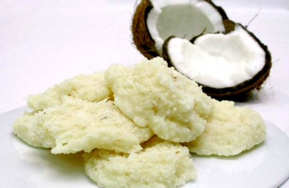

Cocada (Brazilian Coconut Sweet)

Description
Cocada is a popular street food sold everywhere in Brazil. It's a sweet made with grated fresh coconut.
There are many variations, this one with a hint of vanilla is one of them. Use the tin of condensed milk for measuring the sugar, as well.
Ingredients
- 1 (14 ounce) can sweetened condensed milk
- 1/2 can sugar (use sweetened condensed milk can as measure)
- 3 cups grated fresh coconut
- ½ teaspoon vanilla extract
Directions
- Combine condensed milk, sugar, coconut, and vanilla extract in a large saucepan. Heat over medium-low heat, stirring constantly, until the mixture thickens and becomes a little darker. If you find that the cocada is cooking too quickly, reduce heat to low and continue stirring.
- Once the mixture has thickened enough and feels heavy on the spoon, remove from heat and place spoonfuls on a piece of parchment paper.
- Let cool for about 30 minutes (cocada will harden a bit) and transfer to a sealed container.
Notes
You can substitute desiccated coconut, if fresh coconut is not available. The original Brazilian recipe is in metric measures. If you have a scale measure out 300 grams fresh grated coconut. The sugar is always measured with the can of the sweetened condensed milk.
Home